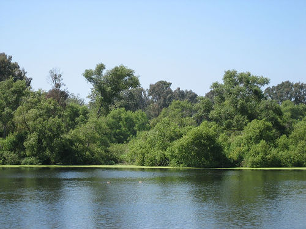

Huntington Central Park Dog Park (Best Friend Dog Park) Fenced
- Fenced Yes — enclosed off-leash park; City GIS maps two sections (~1.7 acres each)
- Water Yes — self-watering bowls (City park listing)
- Small-dog area Yes — separate areas for large and small dogs (City)
- Hours Posted by section — hbcentralpark.com lists small-dog area 9 a.m.–7 p.m. weekdays / 10 a.m.–7 p.m. weekends and big-dog area 9 a.m.–6 p.m. weekdays / 10 a.m.–5 p.m. weekends (not on a City page; confirm signs)
Established 1995; bark surfacing. Parking lot on Edwards St. Volunteer group site: hbdogpark.com (FYIdogpark@gmail.com). Benches, shade trees, and waste stations reported by the Central Park guide.